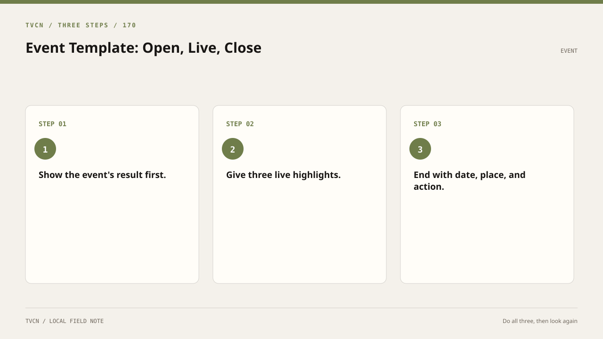

A usable 60-second segment table
| Segment | Time | Picture | Sound / pass line |
|---|---|---|---|
| Result | 0–10s | The hottest second of the event, or the finished room | One “what happened” line; not the host opening |
| Opening | 10–20s | People enter, sign in, space established | Ambience; time and place clear |
| Three highlights | 20–40s | Three different highlights, one shot each | Keep event sound; no wall-to-wall music |
| Close | 40–50s | The crowd leaves or one final action | One result line; no VIP list |
| Action | 50–60s | Time, place or registration entry | One next step only |
Fill three lines before rolling
- Result: what happened by the end? One sentence.
- Three highlights: write what the camera sees, not “good atmosphere.”
- Action: how does the viewer join next time? Time, place, entry.
On set
Result, three live highlights, and a close with time, place, and action. No list of VIPs.
DIAGRAM / Event
Three-step flow

Do this
An event template runs opening, site, close; the site section needs ambient sound, not wall-to-wall music.
- Open with the result.
- Give three highlights with ambient sound.
- Close with time, place, and action, not an officials list.
Avoid
Do not score everything; without site sound, it feels like a promo.
Image note. Covers, diagrams and step images on this page are editorial illustrations or structure diagrams, not photographs of a test performed here; they are not evidence of measured gear performance. Where an image is AI-assisted, the caption says so. Read the test conditions in the text before treating an image as proof.